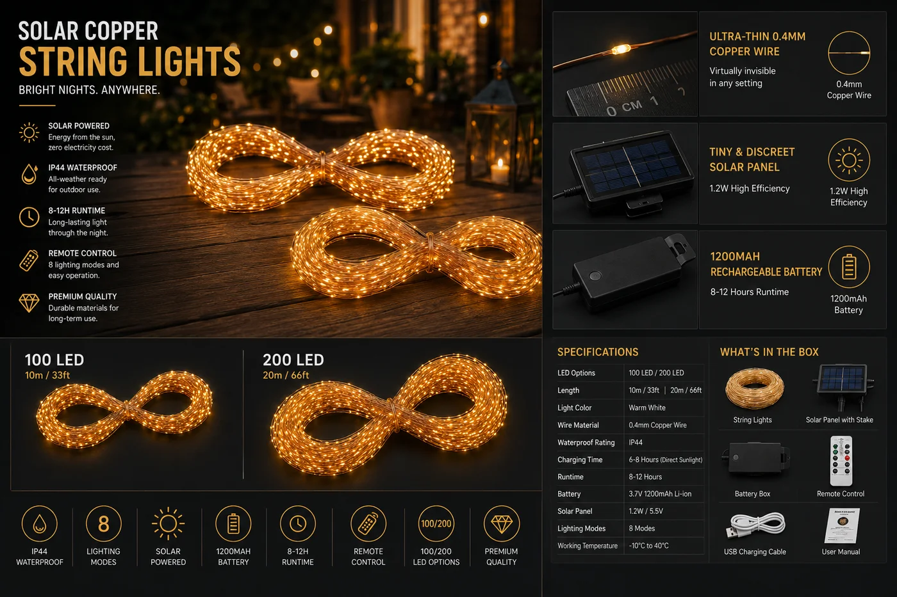

太阳能铜线灯串
0.4mm 柔性铜线上的精致仙女灯——100 或 200 颗 2700K 暖光微 LED,10m 或 20m,IP44,8 种模式。

如果说爱迪生灯串是大胆的,铜线仙女灯则是精致的——也是巨大的季节性走量品。0.4mm 铜线可绕过枝条、栏杆和餐桌布置,白天几乎隐形,夜里以 100–200 颗暖光微 LED 闪烁。八种灯光模式(常亮、闪烁、流水等)增添趣味,而且全靠太阳能——无需买电池、无需藏电线。
规格参数
| LED | 100 / 200 微 LED |
|---|---|
| 色温 | 2700K 暖白 |
| 线材 | 0.4mm 柔性铜线 |
| 长度 | 10 m / 20 m |
| 电池 / 光伏板 | 1200mAh · 1.2W 板 |
| IP 防护等级 | IP44 |
| 模式 | 8 种灯光模式 |
| 续航时间 | 8–10 小时 |
| 认证 | CE + RoHS |
为什么选它
可弯曲铜线。能缠任何东西——树木、栏杆、餐桌中心摆件——展示百变。
8 种模式。闪烁与流水效果比单一模式灯串更显价值。
季节性走量。节庆与户外生活产品线里可靠的高周转 SKU。
已认证、支持 OEM。每份报价附 CE + RoHS;可定制长度与包装。
为这些市场而建西班牙、澳大利亚、拉美等地的节庆、零售与活动渠道——季节性走量的装饰 SKU。